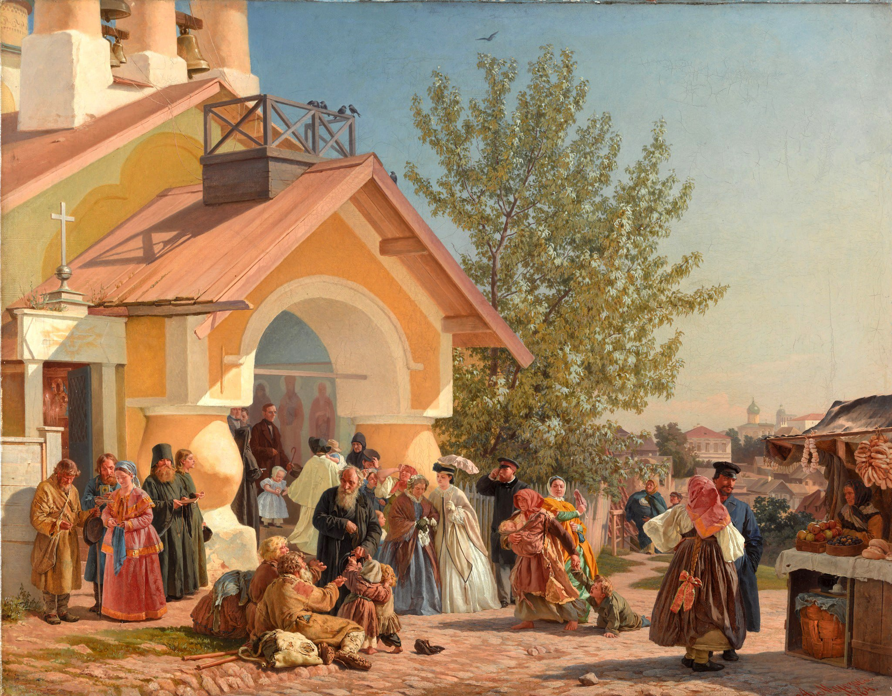

Александр Иванович Морозов
Выход из церкви в Пскове, 1864

Холст, масло, 71 x 90,3 см
Государственная Третьяковская галерея, Москва. Приобретено П.М. Третьяковым у автора в 1867 г.
Жанровый живописец Александр Морозов – сын бывшего дворового, художника И.М. Морозова – обучался в Императорской Академии художеств в качестве вольнослушателя с 1852 года. Студент класса исторической живописи Алексея Маркова, в 1863 году он участвовал в так называемом Бунте четырнадцати, вместе с другими выпускниками протестуя против косности традиционной образовательной системы и устаревших порядков. Его участники организовали первое в России независимое творческое объединение – Санкт-Петербургскую артель художников, на выставке которой уже в 1864 году Морозов представил картину «Выход из церкви в Пскове». Произведение было по достоинству отмечено современниками и впоследствии принесло Морозову звание академика. «Сколько солнца, света во всей картинке! Как все это ново, оригинально по пропорциям! Высокая паперть, зелёное, молодое, пахучее дерево; всё это живо, весело, как в натуре…» – описывал свои впечатления от полотна Илья Репин. На картине Александр Морозов запечатлел типичный для жизни небольшого губернского города сюжет: в церкви закончилось богослужение, одухотворенные прихожане в праздничных нарядах выходят на оживленную улицу. Множество героев и мизансцен, обилие тонко подмеченных деталей словно наполняют полотно звуком, перенося зрителя на площадь старого города, – здесь и звон колоколов, и шепот исповеди, и перепалка уличных торгашей. Художник с интересом описывает столкновение двух миров, реакцию людей друг на друга – благообразные посетители церкви аккуратно обходят просящих милостыню, некоторые брезгливо отмахиваются. Бедняки, среди которых дети и старики, настойчиво тянут руки к проходящим мимо людям. При этом в трактовке Морозова нет обличения или осуждения – он запечатлевает реальность жизни, без прикрас изображая нравы современников и народный быт. Известно, что художник не раз бывал во Пскове и много работал с натуры. Так, изображенная площадь имеет конкретный прообраз – в архитектуре храма узнается церковь Варлаама Хутынского на Званице, достопримечательность города.